Unidad 1.1
Multiplicación y división de números con signo
Referencia curricular
Propósito
Que el alumno intuya la regla de los signos para la
multiplicación y división mediante los ejercicios y problemas planteados.
Instrucciones generales
La unidad se divide en cinco apartados:
2. Multiplicar
3. Dividir
4. Ejercicios
5. Aplicaciones
Este menú aparece a lo largo de toda la unidad y conserva su funcionalidad.
Brinda acceso a la ayuda de
las escenas interactivas
Uso de campos de texto
En algunas escenas aparecen campos de texto para que el usuario escriba en ellos valores o expresiones numéricas. La forma de uso de estos campos es la siguiente:
-
Cuando se introducen valores en los campos de texto es necesario oprimir al final la tecla Intro. Si al lado del campo de texto hay un botón con el símbolo éste tendrá la misma función que presionar la tecla Intro.
-
En caso de escribir una expresión numérica como 2^3+4, al presionar la tecla Intro lo que aparecerá será el resultado de la operación, en este caso 12. El símbolo "^" se utiliza para elevar a una potencia.
Uso de calculadora
Al hacer doble clic en un campo de texto o en una de las celdas de una tabla aparecerá una calculadora o un teclado virtual.
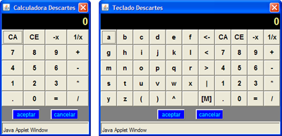
En ambos casos al terminar de introducir los datos se debe presionar el botón Aceptar; en este momento desaparecerá la calculadora y aparecerá el último resultado escrito en ella.
1. Flechas
Este apartado consta de tres escenas, las cuales se integraron a esta unidad con el objeto de recordarle al alumno cómo se realizan la adición y sustracción de números enteros. Utilizamos las flechas solamente como una herramienta visual para encontrar la posición de los números positivos y negativos en la recta numérica.
Flechas 1
En esta primera escena se le pide al alumno mover el carro hasta el número que se indica. Una vez posicionado, debe darle clic al botón Verificar para confirmar si lo que hizo es correcto. Si fue así entonces el ejercicio termina y puede seguir con otro. Si lo que hizo estuvo mal, entonces aparecerá un punto en el lugar correcto y se da por terminado el ejercicio. Siempre que se quiera un ejemplo distinto simplemente se debe dar clic al botón Otro ejercicio:
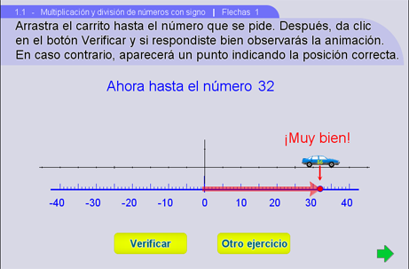
Flechas 2
Antes de empezar a utilizar esta escena se le debe mostrar al alumno que las flechas verde y amarilla que se encuentran en la parte inferior, corresponden a la posición del primer y segundo sumando respectivamente.
En esta escena se le pide al alumno mover el carro a la posición que indica el primer sumando. Inmediatamente después debe darle clic al botón verde que indicará si el lugar es correcto o no. Si la posición no fue la adecuada, entonces aparecerá el punto que corresponde al primer sumando en la recta y el ejercicio habrá terminado. Si estuvo bien, entonces la flecha verde aparecerá en la recta numérica y el ejercicio continuará.
A partir de donde termina la flecha verde el carro debe avanzar la cantidad que señala el segundo sumando y darle clic al botón amarillo. Así como sucede con el botón verde, el amarillo verificará el resultado obtenido. Si fue incorrecto, entonces aparecerá el punto que debió localizar y el ejercicio habrá terminado. Por el contrario, si fue acertado, entonces se presentará la flecha amarilla, delante de la verde y, se observará una flecha roja que representa la suma total, así como el resultado numérico:
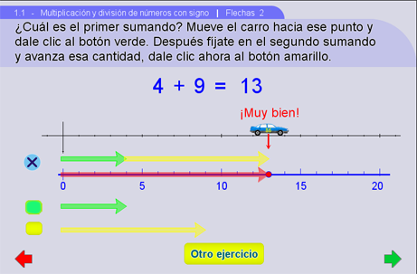
Flechas 3
Esta escena funciona exactamente igual que Flechas 2, la diferencia es que ahora podemos sumar números positivos con negativos, negativos con positivos o, negativos con negativos. El botón Otro signo proporciona estas tres opciones y el botón Otro ejercicio tiene tantos ejemplos como se deseen de cada una de las tres series de signos.
Siguiendo el ejemplo que se presenta en la imagen siguiente, debemos aclarar que el carro, una vez que se colocó de acuerdo al primer sumando: 2, y si la posición fue correcta, entonces hay que moverlo a partir de esa posición tantas veces como diga el segundo sumando: -13. Si el sumando resulta negativo, como en este caso, entonces el movimiento se hará hacia la izquierda. Si se coloca correctamente, el resultado aparecerá así como la flecha que indica la suma total:
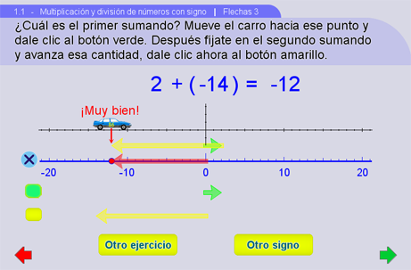
Sugerencias didácticas
Se recomienda al profesor usar siempre estas escenas como introducción a la unidad, ya que facilitará la comprensión de los temas y de los mismos interactivos. Debemos dejar claro que el uso de las flechas es únicamente una herramienta visual, como mencionamos al principio, no es otra forma de sumar enteros.
Para empezar cada una de las tres escenas, se recomienda que el profesor explique y realice al menos un ejercicio antes de que pase a algún alumno a resolverlo en el pizarrón; de esta forma les quedará más claro que hacer, sobre todo en las escenas Flechas 2 y 3. La primera escena es muy rápida; si les resulta demasiado fácil, se pueden ver sólo dos o tres ejercicios. En Flechas 2, dependiendo de que tan entendible sea, puede verse también junto con dos o tres ejercicios. Sin embargo, en Flechas 3, se deben hacer por lo menos dos ejercicios de cada una de las tres series de signo.
2. Multiplicar
Este apartado consta de seis escenas y su objeto es mostrar las reglas de los signos para la multiplicación mediante ejemplos y ejercicios varios, sin mencionarlas como tales.
Multiplicar 1
En la escena se presentan mediante una animación las tablas de multiplicar del -10 al 10, además de la ubicación de los números en la recta numérica de acuerdo a su signo. Para explorar las diferentes tablas se deberá escribir en el campo de texto un número entre -10 y 10 y presionar la tecla intro.
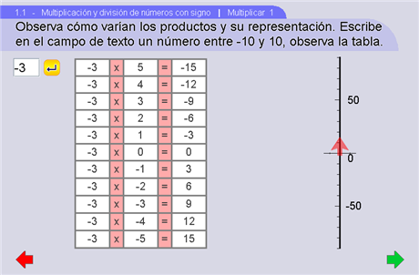
Multiplicar 2
En la siguiente escena, el alumno podrá mover el paréntesis de izquierda a derecha y observar que el resultado no cambia, aún cuando la forma de representarlo sea diferente. Al presionar los pulsadores podrá seleccionar los números que desee y repetir este ejercicio tantas veces como lo considere necesario:
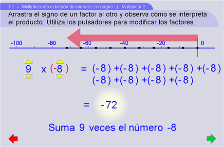
Multiplicar 3
En la escena a continuación, el alumno deberá resolver las operaciones indicadas y poner el resultado correcto. Este resultado lo debe seleccionar de las seis opciones del lado derecho y desplazarlo hasta el espacio apropiado. Note que en las posibles respuestas sólo cambia el signo:
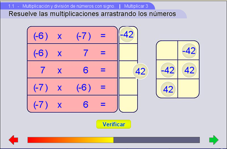
Multiplicar 4
Como en la escena anterior, el alumno deberá resolver las operaciones y poner el resultado correcto en los espacios adecuados. En este caso las operaciones son fraccionarias:
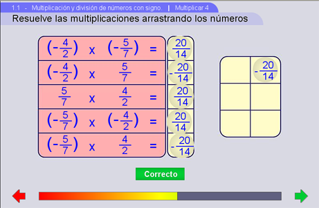
Multiplicar 5
En la siguiente escena, el alumno deberá resolver operaciones decimales y poner el resultado correcto. También aquí ocurre que las posibles respuestas son las mismas, sólo cambia el signo:
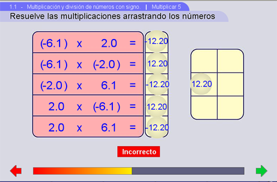
Multiplicar 6
De manera similar a las escenas anteriores, el alumno deberá seleccionar de las seis opciones, el resultado correcto para cada operación:
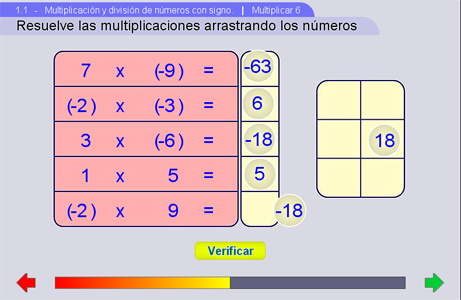
Sugerencias didácticas
1) Multiplicar 1El propósito de la escena es que los alumnos observen las tablas de multiplicar tomando en cuenta los signos de cada factor y del producto, para obtener la regla de los signos para la multiplicación. Llame su atención en los signos de los productos cuando los signos de los factores son positivos, cuando ambos son negativos, cuando los signos son diferentes. Después de varios ejemplos, se sugiere plantearle al alumno un ejercicio igual pero que realice en su cuaderno y que al terminar puedan revisar juntos en el pizarrón. Antes de continuar con la segunda escena, se pueden hacer comentarios grupales de las primeras conclusiones con respecto a las reglas de los signos para la multiplicación.
2) Multiplicar 2
Una vez que hagan lectura de la multiplicación (+) x (-), se recomienda que los alumnos cuenten la cantidad de números que se están sumando y al mismo tiempo observen también el número de segmentos que se indican en la recta numérica. Es decir, que no pierda de vista nunca la idea de que la multiplicación (+) x (-), la estamos planteando como suma de números negativos y que la estamos observando también en la recta. La función de la flecha sigue siendo la misma que hemos utilizado hasta ahora. Es importante también que el profesor lea el enunciado que se encuentra en la parte inferior de la escena en donde encontrará la conclusión de lo que hizo anteriormente.
Ahora, cuando cambiamos el signo menos al lado izquierdo tenemos el caso (-) x (+), el cual no podemos representar como suma de números negativos. La razón es la siguiente: si tenemos por ejemplo: 9 x (-8), como en la imagen siguiente, al cambiar el signo tendríamos: (-9) x 8, lo que querría decir que sumamos -9 veces el número 8, y esto no tiene sentido. Lo que hacemos entonces es ayudarnos de la conmutatividad de los enteros, vista ya por los alumnos en primero de secundaria, y representaríamos a (-9) x (8) como (8) x (-9), la cual se escribiría como: suma 8 veces el número -9. Se puede revisar el caso (8) x (-9), moviendo los pulsadores, observando que el resultado efectivamente es el mismo.
3) Multiplicar 3, 4 y 5
Es importante que todos juntos realicen por lo menos los primeros ejercicios: ya sea que los alumnos los hagan en sus cuadernos, de forma oral o el mismo profesor los resuelva. Aún después de esto, si el alumno tiene problemas para realizar los ejercicios, entonces se debe regresar a las escenas exploratorias y el profesor debe ayudarle a resolver sus dudas haciendo él mismo varios ejemplos.
La última escena tiene como finalidad reforzar las reglas de los signos para la multiplicación. Por lo que si el profesor cree que no es necesario utilizarla, puede prescindir de ésta o realizar sólo algunos ejercicios. Ahora que si se quiere aprovechar para recordar las tablas de multiplicar, entonces es una buena opción.
La idea de incluir escenas de ejercicios con números fraccionarios y decimales es mostrar que no importan los números que tengan que multiplicar, la regla de los signos para la multiplicación sigue funcionando igual para todos.
El uso de paréntesis en estas escenas es para acostumbrar a los alumnos a la adecuada presentación de sus operaciones, especialmente aquéllas que contengan el signo menos.
3. Dividir
Este apartado consta de cinco escenas. Al igual que en el apartado Multiplicar, su propósito es mostrar las reglas de los signos pero para la división, mediante ejemplos y ejercicios diversos.
Dividir 1
El alumno podrá mover uno o ambos paréntesis de arriba hacia abajo y observará cómo el resultado cambia de signo. Puede modificar dividendo y divisor presionando los pulsadores amarillos:
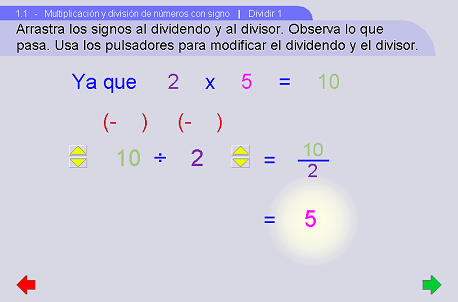
Dividir 2
En esta escena el alumno deberá resolver la operación entera indicada colocando el resultado en el espacio apropiado. Las opciones son iguales salvo por el signo:
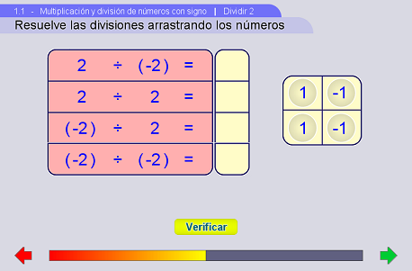
Dividir 3
Al igual que en la escena anterior, el alumno deberá seleccionar de las seis opciones, el resultado correcto para cada operación. En este caso los números son fraccionarios:
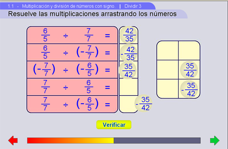
Dividir 4
El alumno deberá resolver las operaciones con números decimales y seleccionar de las cuatro opciones el resultado correcto para cada operación:
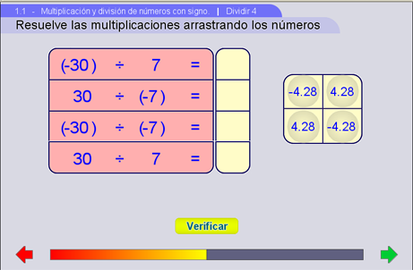
Dividir 5
Como en las tres escenas anteriores, el alumno deberá seleccionar de las seis opciones, el resultado correcto para cada operación:
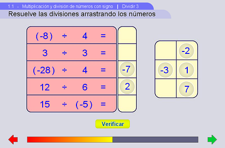
Sugerencias didácticas
Hacer énfasis en que las reglas de los signos de la división
provienen de las de la multiplicación, vistas ya en el apartado anterior. Este hecho
se aprecia bastante bien en Dividir 1.
Se le sugiere al profesor, igual que en las escenas de ejercicios del apartado Multiplicar,
realizar todos los ejercicios que tiene cada una de las escenas Dividir 2, 3 y 4.
Es importante que todos juntos realicen por lo menos los primeros
ejercicios: ya sea que los alumnos los hagan en sus cuadernos, de forma oral o el
mismo profesor los resuelva.
Aún después de esto, si el alumno tiene problemas para realizar los ejercicios, entonces se
debe regresar a las
escenas exploratorias y el profesor debe ayudarle a resolver sus dudas haciendo él mismo varios
ejemplos.
Dividir 5 puede omitirse si después de realizar todos los ejercicios anteriores, las reglas
son claras.
Las escenas de ejercicios con números fraccionarios y decimales nos ayudan a mostrarle al
alumno que las reglas de los signos para la división funcionan para todos los números reales.
Nuevamente, el uso de paréntesis en estas escenas es para acostumbrar a los alumnos a la adecuada
presentación de sus operaciones, especialmente aquéllas que contengan el signo menos.
4. Ejercicios
Este apartado consta de tres escenas. Son muy importantes para reforzar las reglas de los signos para la multiplicación y división.
Ejercicio 1
El objeto del ejercicio es completar correctamente el cuadrado llenando los espacios que faltan. Para esto hay que arrastrar cada respuesta del lado derecho y colocarla en el lugar que le corresponda:
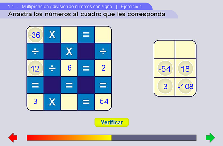
Ejercicio 2
Se trata de llenar correctamente los círculos vacíos arrastrando la respuesta al lugar que le corresponda:
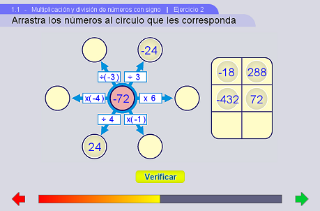
Ejercicio 3
Al igual que en los ejercicios de los apartados Multiplicar y Dividir, el alumno deberá colocar la respuesta correcta a las operaciones presentadas. En esta escena estamos combinando las operaciones de multiplicación y división para números enteros, fraccionarios y decimales:
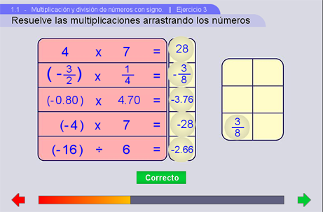
Sugerencias Didácticas
Se sugiere no pasar a este apartado hasta no haber realizado los ejercicios propuestos en Multiplicar y Dividir, ya que así el alumno tendrá más idea de lo que está haciendo.Se recomienda hacer todos los ejercicios que se presentan. Si el alumno tuvo problemas para realizar los ejercicios, entonces el profesor debe ayudarle a resolver sus dudas haciendo él mismo varios ejemplos.
Se les puede proponer a los alumnos que utilizando la plantilla, ya sea del Ejercicio 1 o 2, inventen ellos mismos los números de tal forma que las operaciones se sigan preservando. O, que construyan una nueva plantilla para realizar ejercicios en los que utilicen las reglas de los signos para la multiplicación y para la división.
5. Aplicaciones
Este apartado consta de cuatro escenas, en las cuales se aplicarán las reglas de los signos de la multiplicación y división.
Aplicación 1
En esta escena el alumno podrá observar cómo se sumerge el submarino (con velocidad constante) según avanza el tiempo. Los números que se pueden escribir en el campo de texto están entre -10 y -1. En la primera columna (Tiempo) los números son positivos o cero, mientras que en la segunda columna (Velocidad) son negativos. La tercera columna (Nivel) está conformada por los productos de los números de las primeras dos columnas, por lo cual sus valores son negativos o cero. Se busca que el alumno asimile la idea de que el producto de un número negativo con uno positivo da como resultado un número negativo.
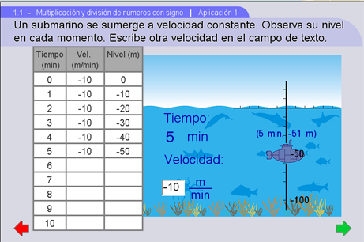
Aplicación 2
En esta escena encontramos ejemplos que utilizan las reglas de los signos de la multiplicación. La idea es leer las instrucciones que se van presentando y encontrar la correspondencia entre los datos y los números de la suma inferior. El primer número de la operación corresponde al sótano o piso donde inicialmente nos encontramos. La multiplicación, escrita entre paréntesis abajo, corresponde al desplazamiento por el número de veces que se indica, por ejemplo, aquí se muestra el hecho "subes 3 pisos, 2 veces". Este producto se dibuja como una flecha vertical roja. El botón Otra forma hace el cambio "veces por desplazamiento" a "desplazamiento por veces" mostrando que el resultado es el mismo. El botón Otro ejercicio proporciona nuevos ejemplos:
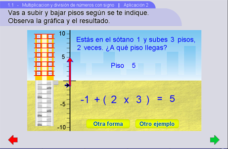
Aplicación 3
Usando los pulsadores, el estudiante deberá plantear correctamente el problema sugerido y después, encontrar el resultado apropiado. El botón Otra forma permuta los lugares Veces y Desplazamiento. Verificar evalúa los tres resultados, no solo el último:
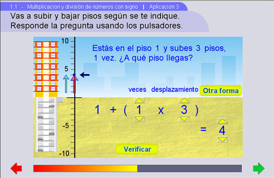
Aplicación 4
Usando los pulsadores, el alumno deberá encontrar primero la suma de cantidades y después el promedio. Se evalúan ambos montos:
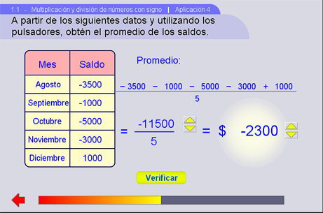
Sugerencias Didácticas
La idea de presentar la velocidad negativa viene del hecho de que el submarino se dirige hacia abajo del cero de la recta numérica, siendo entonces una distancia negativa, y por lo tanto, también la velocidad. No así la magnitud de la velocidad, la cual siempre será positiva.
Se recomienda que el alumno realice su propia tabla en su cuaderno y llene los espacios correspondientes a una velocidad propuesta. Después puede comprobar sus resultados utilizando el interactivo.
2) Aplicación 2
Escena de preparación. Puede verse rápidamente sólo como un antecedente.
3) Aplicación 3
Se recomienda explicar el movimiento de las flechas verticales con respecto al cambio en los pulsadores. La flecha verde corresponde a Veces y la roja al Desplazamiento que se va realizando.
Si se pulsan Veces y Desplazamiento una sola vez, ambas flechas avanzarán una unidad. Dejando fijo Veces y moviendo Desplazamiento, hace que la flecha verde siga a la roja en su movimiento.
Dejando fijo Desplazamiento y moviendo Veces, hace que la flecha roja crezca tanto como veces indique.
4) Aplicación 4
Antes de proyectar esta escena, se recomienda explicar el concepto y la obtención del promedio de un conjunto de números. La situación es estrictamente numérica y entrena a los alumnos a realizar divisiones de números con signo. Dejamos la repetición de la escena al criterio del profesor.
Créditos
Autora
Alexandra Guzmán Velázquez
Agradecimiento
A María Teresa Rojano Ceballos por sus sugerencias didácticas
Esta unidad interactiva fue desarrollada en el ILCE por el Grupo Descartes.
Sus contenidos se distribuyen bajo una licencia de

La unidad utiliza Descartes que es software libre.
Adaptación a DescartesJS: Juan Gmo. Rivera Berrío y José R. Galo Sánchez (2016)